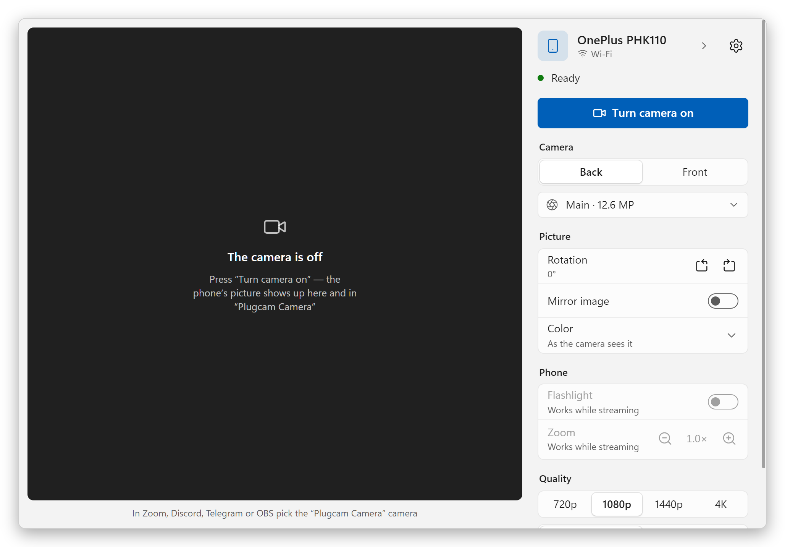

Your Android phone as a Windows webcam
USB cable or Wi-Fi, one button. No app on the phone, no OBS, no watermarks. Plugcam is a free, open-source alternative to DroidCam, Iriun and iVCam, built on scrcpy.

Why Plugcam
"Plugcam Camera" shows up next to your other cameras in Zoom, Discord, Telegram Desktop, OBS, Chrome, Edge and Firefox, so browser calls such as Google Meet work too.
Get started
The first time takes three steps. After that, plug in, or just be on the same Wi-Fi, and press one button.
- Install PlugcamRun the installer from the latest release, or unpack the portable zip. Windows asks for administrator rights once, to add the camera.
- Turn on USB debuggingOn the phone: Settings → About phone, tap Build number seven times, then Developer options → USB debugging. Plugcam's first-run guide shows the way.
- Plug in and streamTap Allow on the phone and press Turn camera on. In your video app, pick Plugcam Camera. For Wi-Fi, open Phones and Wi-Fi in the side panel and pair the phone by QR code or pairing code, or press From cable.
How it compares
The apps people usually try first, as of September 2026. Free tiers change often, so each name links to the vendor's own page.
| Plugcam | DroidCam | Iriun | iVCam | Camo | Phone Link | |
|---|---|---|---|---|---|---|
| App on the phone | none | yes | yes | yes | yes | Link to Windows |
| Free picture | up to 4K, 30 or 60 fps | 640×480; HD has a watermark | up to 4K, with a watermark | watermark; 640×480 after the trial | up to 720p | 720p |
| Ads | none | yes | yes | yes | none | none |
| Connection | USB, Wi-Fi | USB, Wi-Fi | USB, Wi-Fi | USB, Wi-Fi | USB, Wi-Fi | Wi-Fi + Bluetooth |
| Open source | yes, Apache-2.0 | PC client only | no | no | no | no |
| Windows download | 7.2 MB | 98 MB | 8.8 MB, needs .NET Desktop Runtime | about 43 MB | about 475 MB | built into Windows 11 |
What Plugcam still lacks next to the paid apps: sound.
Other open-source projects
Of these, only Plugcam gives Windows a webcam with nothing installed on the phone and no OBS in between. The others have things Plugcam doesn't: older Android versions, or (BestCam) a camera that Microsoft Store apps can see. scrcpy, which Plugcam builds on, is a command-line tool; Plugcam puts its camera mode into an app with a preview and controls. Checked against each project's README in September 2026.
| Plugcam | VCamdroid | Android Webcam Project | BestCam (alpha) | scrcpy | |
|---|---|---|---|---|---|
| App on the phone | none | yes | yes | yes | none |
| Webcam on Windows | yes, DirectShow | yes, DirectShow | yes | yes, Media Foundation (Windows 11 22H2+) | through OBS or another window-capture tool; a webcam on Linux |
| Connection | USB, Wi-Fi | USB, Wi-Fi | USB, Wi-Fi | USB | USB, Wi-Fi |
| Android | 12+ | 7.0+ | 8.0+ | 8.0+ | 12+ for the camera |
| On the PC | app with a preview, controls and a first-run guide | app | app | Python script; app announced | command line; the window shows only the video |
| Install | installer or portable zip; updates itself | zip, then install.bat as administrator | installer | zip, no installer | zip or winget |
| License | Apache-2.0 | MIT | GPL-3.0 | GPL-2.0 | Apache-2.0 |
FAQ
Short answers to what people ask most.
Can I use my Android phone as a webcam on Windows without installing an app on the phone?
Yes, that is what Plugcam does. It starts the camera part of scrcpy on the phone over USB debugging while you stream, and removes it when you stop. No APK is installed, and the phone doesn't need root, only Android 12 or newer. Phones with Android 14 or newer may also have a built-in USB webcam mode, if the maker turned it on (Pixels do).
Is there a free, open-source alternative to DroidCam, Iriun or iVCam?
Plugcam is one. It is open source under Apache-2.0 and gives up to 4K at 30 fps, or 60 fps on phones that support it, over USB or Wi-Fi, with no watermark, ads, time limit or account. What those apps have and Plugcam doesn't yet: sound. See How it compares.
Which apps can use Plugcam Camera?
Desktop apps and browsers that use DirectShow cameras: Zoom, Discord, Telegram Desktop, OBS, Chrome, Edge and Firefox, so browser calls such as Google Meet work too. Apps from the Microsoft Store, like the Windows Camera app, don't see it; a Media Foundation camera for them is planned. Microsoft Teams hasn't been checked yet.
Do I need OBS?
No. Plugcam registers its own camera, so desktop video apps see it directly. With plain scrcpy on Windows you would capture its window in OBS and start OBS's virtual camera.
Does Plugcam work over Wi-Fi?
Yes, since version 0.2.0. Open Phones and Wi-Fi and pair the phone once by QR code or a six-digit code from Developer options → Wireless debugging, or press From cable to move a phone that is on the cable to Wi-Fi. Paired phones connect by themselves when they show up on the network. Over Wi-Fi the picture never falls more than about half a second behind: Plugcam skips ahead instead of letting the delay pile up, and lowers the bit rate if the network can't keep up.
Does Plugcam send sound?
No, Plugcam sends only the picture. Use your PC's microphone or headset.
Does Plugcam work with an iPhone, or on macOS or Linux?
No, Plugcam needs an Android phone and Windows. On Linux, scrcpy itself can turn the phone into a webcam: load the v4l2loopback module and run scrcpy --video-source=camera --v4l2-sink=/dev/videoN --no-video-playback. On a Mac with an iPhone, Continuity Camera is built in.
Which Android phones work with Plugcam?
Plugcam needs Android 12 or newer, because scrcpy can capture the camera only from Android 12 on. It was built and tested with a OnePlus 11R (Android 15) and Chrome; other phones should work the same way. Some phones list lenses they won't stream from a third-party app; Plugcam notices, hides that lens and switches to the main camera. If your phone or app doesn't work, please open an issue with the phone model and the app.
Is it safe?
Plugcam has no servers and sends nothing anywhere: the video goes from the phone to your PC over the cable or your local network and stays there. The only thing it fetches is the list of releases on GitHub, once a day, to check for updates, and you can turn that off. The source is on GitHub.